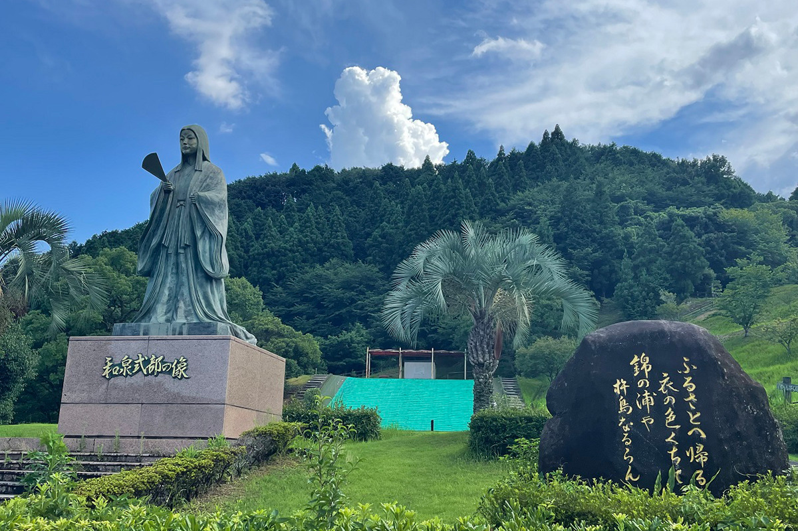
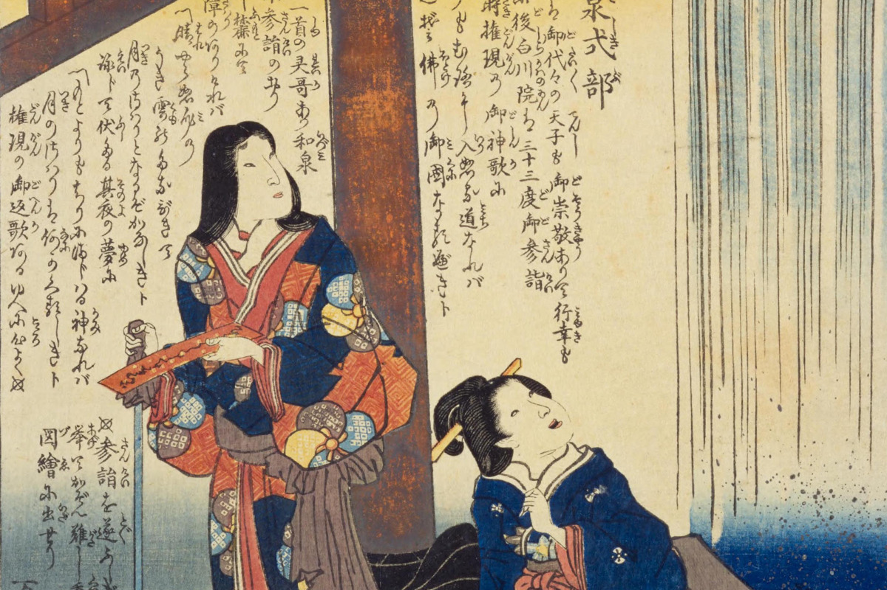
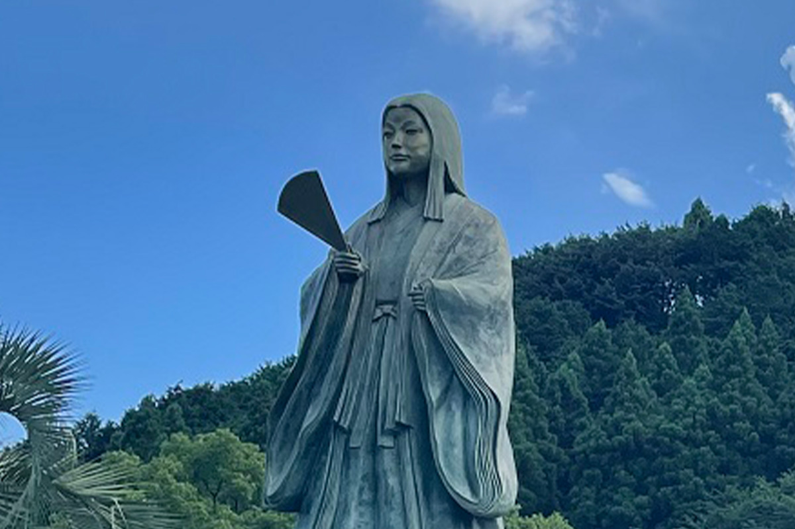
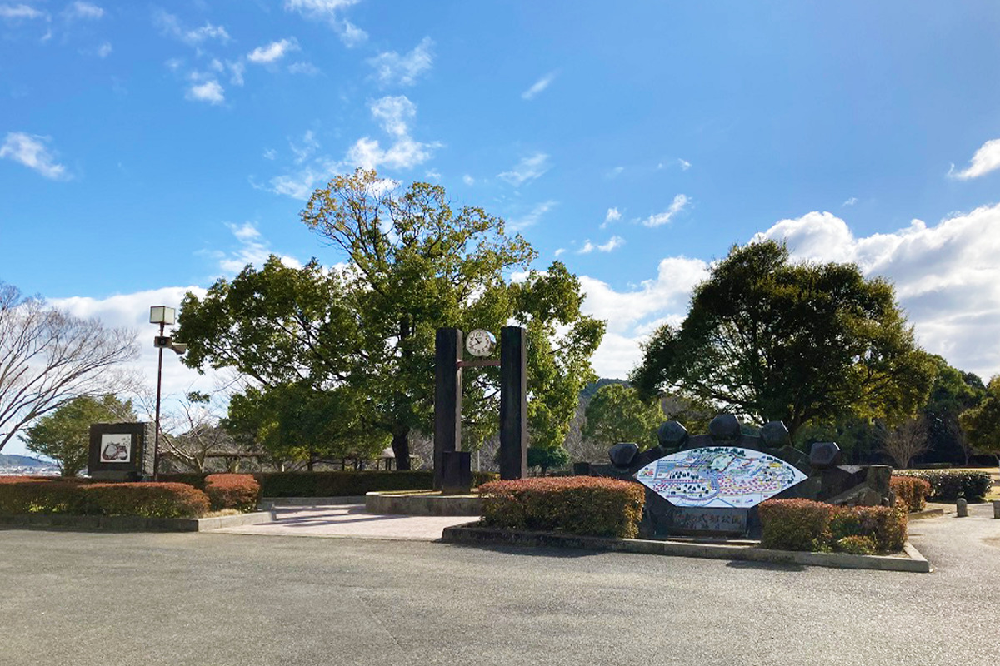

Префектура Сага · Уресино · история
Идзуми-сикибу: поэтесса эпохи Хэйан, которую по легенде вырастили в Уресино

Идзуми-сикибу была одной из самых ярких поэтесс японского двора около тысячи лет назад, и её жизнь любят пересказывать как роман. По местной легенде, детство она провела в Сиоте, на юге префектуры Сага, и в городе Уресино ей посвящён целый парк.
Поэтесса
Женщины «Ста стихотворений»
«Хякунин иссю», или «Сто стихотворений ста поэтов», это знаменитая антология классической японской поэзии. С ней легко прикоснуться к классике: в коротких стихах видны и старинные японские пейзажи, и чувства их авторов. Расцвет японской литературы пришёлся на эпоху Хэйан (794–1185), и женщины в ней играли огромную роль: в антологию вошли стихи 21 поэтессы.

Многие поэтессы того времени жили свободно и открыто любили. Женщине редко выпадала возможность высказаться, и те, кто всё же прославился своим словом, обладали не только талантом, но и смелостью жить по-своему.
Одной из первых в этом ряду стоит Идзуми-сикибу. Её любовные истории обсуждал весь двор, а свои чувства она оставила во множестве стихотворений.
Жизнь
Два брака, два принца и дневник
Имя «Идзуми-сикибу» сложено из двух должностей: отец поэтессы, Масамунэ Оэ, служил в ведомстве церемоний (Сикибу), а первый муж, Митисада Татибана, был губернатором провинции Идзуми. Замуж она вышла около двадцати лет, и в этом браке родилась дочь, Косикибу-но Найси. Дочь тоже стала поэтессой, и её стихотворение также вошло в «Сто стихотворений ста поэтов».
Уже будучи замужем, Идзуми-сикибу полюбила принца Тамэтаку, сына императора Рэйдзэя, который был моложе её. Роман быстро стал известен всему двору. Муж развёлся с ней, отец от неё отрёкся, но она осталась с принцем. Через два года Тамэтака умер.
С этого момента начинается «Дневник Идзуми-сикибу»: скорбящей поэтессе присылает цветы младший брат принца, принц Ацумити. Дневник рассказывает, как их чувство растёт в обмене стихами. В конце концов принц поселил её в своём доме, и его законная жена покинула дворец. На этом дневник обрывается. Ацумити умер примерно через четыре года.
При дворе
Талант, который оценил Митинага
Митинага Фудзивара (966–1028), самый могущественный сановник своего времени, по преданию называл Идзуми-сикибу «ветреной женщиной», которая ищет лишь радостей любви. И всё же её дар он ценил высоко и пригласил её служить своей дочери Сёси, супруге императора.

У Сёси при дворе была сильная соперница за внимание императора, и поэтесса, чьими стихами восхищались принцы, могла стать для неё важной союзницей. Похоже, Митинага ставил талант выше пересудов о скандальном прошлом.
При дворе Идзуми-сикибу вышла замуж во второй раз, за Ясумасу Фудзивару, и уехала с мужем в провинцию Танго, куда его назначили на службу.
Стихи
Последняя просьба
Стихотворение Идзуми-сикибу в «Ста стихотворениях ста поэтов» стоит под номером 56. В императорской антологии «Госюи-сю» к нему дана пометка: написано, когда автору нездоровилось, и отправлено одному человеку.
Смысл примерно такой: скоро меня не станет в этом мире, и чтобы унести с собой воспоминание, я хотела бы увидеть тебя ещё хоть раз. Кому адресованы эти строки, неизвестно. Поэтесса, которая легко отдавалась новому чувству, здесь просит о встрече, и в этой просьбе слышны одиночество и тревога больного человека.
Где увидеть
Парк в Уресино и места памяти в Киото
По легенде, Идзуми-сикибу родилась в Кисиме, на территории нынешней префектуры Сага, и до девяти лет жила в Сиоте у приёмных родителей, супружеской пары. В одном из её стихотворений есть строки о родном крае и о Кисиме. Предание гласит, что император, тронутый этими стихами, подарил приёмным родителям поэтессы пять тё рисовых полей, примерно пять гектаров. Отсюда, говорят, и название местности Готёда, «поле в пять тё».
Сиота входит в город Уресино, и легенд о поэтессе здесь много. Им посвящён парк Идзуми-сикибу. В нём стоит статуя поэтессы, а рядом камень с её стихотворением о родине.

Парк Идзуми-сикибу
- Адрес
- префектура Сага, Уресино, Сиота-тё, Готёда-ко, 4003
- Телефон
- +81 954-27-7020 (мэрия Уресино, отдел синкансэна и развития города)
- Как добраться
- на машине 20 минут от развязки Такэо-Китагата скоростной дороги Нагасаки; от станции Хидзэн-Касима линии JR Нагасаки автобусом компании «Ютоку» в сторону Такэо-онсэна до остановки Готёда, затем 10 минут пешком
Большую часть жизни Идзуми-сикибу провела в Киото, и места, связанные с ней, есть и там. В святилище Кифунэ, по преданию, она молилась о примирении с мужем, когда их отношения разладились. Храм Сэйсин-ин связывают с ней как с первой настоятельницей. Оба места известны как святыни, куда приходят просить удачи в любви.
Фото: Город Уресино, цифровая коллекция Национальной парламентской библиотеки Японии.